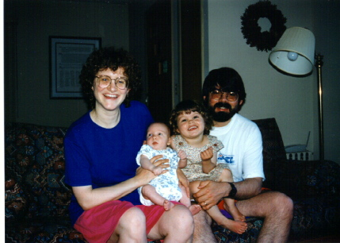

Dave, Ruth, Rachel and Ben Urban Shipley
Obsolete Address Information Suppressed.
September 1997
Dear friends and family,
It's now well over two years since we last put out an Urban Shipley family
newsletter. We hope this letter will catch you up on the highlights of that
interval.
The summer of 1995 included a lovely vacation to Ruth's parents' home in
New Hampshire, with Dave's parents dropping in for a short visit there as
well. Rachel was lucky enough to celebrate her second birthday with all four
grandparents around! The summer also brought lots of hard work on our house.
We stained the outside, which involved cleaning the mildew off the siding
first. Imagine scrubbing the entire outside surface of a house with a brush
and a bucket of strong bleach solution--twice. Yuck. We got help with some
of the other tasks, like a new front step, some new flooring in two rooms,
and a chimney liner. Even a house in relatively good shape seems to need
a lot of work.
We stayed home for Christmas that year and the Urbans came to visit. That
was the first Christmas that Rachel was completely excited about. Decorating
the tree, opening presents, eating more treats than she probably should
have--these were all things that she could really support. Christmas is pretty
wonderful when enjoyed vicariously through the eyes of a small child.
 We made an unusual choice for a winter vacation in January 1996. We went north.
Actually Ottawa is more east than north, but it's definitely not a conventional
winter resort destination. It is, however, one of Dave's favourite places to
be in the winter, because of the wonderful skating on the rideau canal. It's
6 km long altogether, and goes all the way from the Parliament area to Carleton
University, passing Dave's parents' house on the way. You can stop along the
way at booths where they sell hot cocoa or cider, pastries, and a sinful mixture
called poutine (french fries with cheddar cheese curds on them and enough hot
beef gravy poured on to melt it all into one gooey mass of cholesterol). Unfortunately,
it was not a dream vacation. Rachel's asthma flared up in one of the worst episodes
she's had, and we were on the phone back to her doctor in Madison several times.
Ruth was also somewhat uncomfortable, because of what was to be . . .
We made an unusual choice for a winter vacation in January 1996. We went north.
Actually Ottawa is more east than north, but it's definitely not a conventional
winter resort destination. It is, however, one of Dave's favourite places to
be in the winter, because of the wonderful skating on the rideau canal. It's
6 km long altogether, and goes all the way from the Parliament area to Carleton
University, passing Dave's parents' house on the way. You can stop along the
way at booths where they sell hot cocoa or cider, pastries, and a sinful mixture
called poutine (french fries with cheddar cheese curds on them and enough hot
beef gravy poured on to melt it all into one gooey mass of cholesterol). Unfortunately,
it was not a dream vacation. Rachel's asthma flared up in one of the worst episodes
she's had, and we were on the phone back to her doctor in Madison several times.
Ruth was also somewhat uncomfortable, because of what was to be . . .
. . . our biggest news in the last two years, namely the birth of our second
child. Benjamin James Urban Shipley was born at 12:19 a.m. on 17 May, 1996,
at Meriter Hospital in Madison, Wisconsin. He weighed 3.6 kg (8 pounds) and
was 52 cm (20.5 inches) long. That's a little less than a fifth of the weight
of a curling rock and a little less than twice the diameter of a curling
rock.
A new baby in the family always seems to attract the notice of
the grandparents. Both sets visited us in June--helping out immensely. That's
Dave's mom on the left, feeding Ben with help from Rachel. Despite this idyllic
scene, we must report that sibling rivalry is not a myth. Rachel is pretty good
with Ben most of the time, but there are moments . . .
We stayed put for the rest of the summer, but by fall we were
feeling a bit more adventurous, so we went on vacation for a few days in September.
We loaded up our midsized station wagon (sorry, no fake wood panelling) and
drove to Door County in northeastern Wisconsin. Rachel's favourite part was
undoubtedly the indoor pool at the hotel. We also saw lighthouses and museums,
took a ferry to Washington Island, and ate in a restaurant that had goats grazing
on the roof.
Ruth and I enjoyed the change of scene, but we both came home tired and feeling
that it would be a stretch to call what we did a "vacation". It was more
of a "family experience." We're not sure what Ben's favourite part was. He
seemed noncommittal.
Ruth's parents came to visit again for American Thanksgiving
(that's in November, for those who don't live here). That's Rachel baking with
her grandmother to the left.
We stayed in Madison for Christmas again this year, and this time Dave's
parents came, as well as his aunt and uncle (the Wylies) from California.
It was a warm family occasion inside, though Uncle Richard and Aunt Lois
didn't seem to find it all that warm outside. Rachel in particular enjoyed
herself immensely. She didn't get all the loot she asked for (though she
got her number one request, a pinwheel), but she seemed to accept that well.
Ben like the wrapping paper the best.
The arrival of warm weather was a relief--no more snow suits! We were just
getting into the swing of outdoor activities when we made a fast weekend
trip to Roanoke, Virginia for a reunion of Ruth's extended family. It was
a gorgeous spot, and we saw people we hadn't seen since our wedding, people
Ruth had last seen at her grandfather's funeral, and a few we both had never
met. Rachel and Ben both had a good time with their older second cousins,
but did not like waiting for their food in the dining room. A week later,
we flew off to Boston where we had professional meetings. Dave's parents
came down to help with the kid watching and do some site-seeing with us.
Rachel was particularly impressed by the swan boats in Covent Gardens ("My
book is real!") Ben was entertained for a good hour by the planes taking
off from Logan airport when we picniced on Boston Harbor with Ruth's cousin
and family. Our next stop was Ruth's parent's place in New Hampshire. Dave
jaunted off to a work meeting in New York, before rejoining the rest of us
and heading back to Madison. It was hard to consider all of this travelling
vacation, although it was good to see as many people as we did. [need a picture
from this trip]
The parents don't have much new to report. We're still in the same jobs.
The job sharing arrangement was interrupted for six months after Ben was
born, but we're back into it now, with Dave at 70% time and Ruth at 50%.
We're still in the same house. Dave still curls, and Ruth is still relatively
patient with this foible.
In another week we're headed up to visit Ottawa. Ben has taken his first
steps, but finds crawling much quicker. Rachel is in a highly imaginative
phase--and talks non-stop.
Since the kids feel like the most newsworthy parts of our lives these days,
we'll put in just a few more kid pictures. The one on the left just below
was taken at our neighborhood autumn picnic, called Crestfest, in September
1996. The one to the right of it was in our kitchen sometime in October.
Rachel was doing a great job of getting Ben to smile. The picture at the
right is in early December of 1996. Rachel was talking to her grandma on
the phone. Below and to the left is an early January shot of my reading
Winnie the Pooh to Rachel with Ben in attendance. To the right
of that is Ben in a swing at a playground in New Hampshire on our summer
vacation in 1997.
We now have a website of our own, so we'll be posting this newsletter there
at the same time as we start mailing it out. If you're reading this on paper,
you might want to check out the color pictures on the web.
Well, that's it for another year (or two?). We hope this finds you well.
love to all,
Dave, Ruth , Rachel and Ben
 Up to Our Family Home Page
Up to Our Family Home Page
Last Updated: 26 November 2022
WebMaster: Dave Shipley dave@urbship.ca
© Copyright 1997-2022 David Urban Shipley